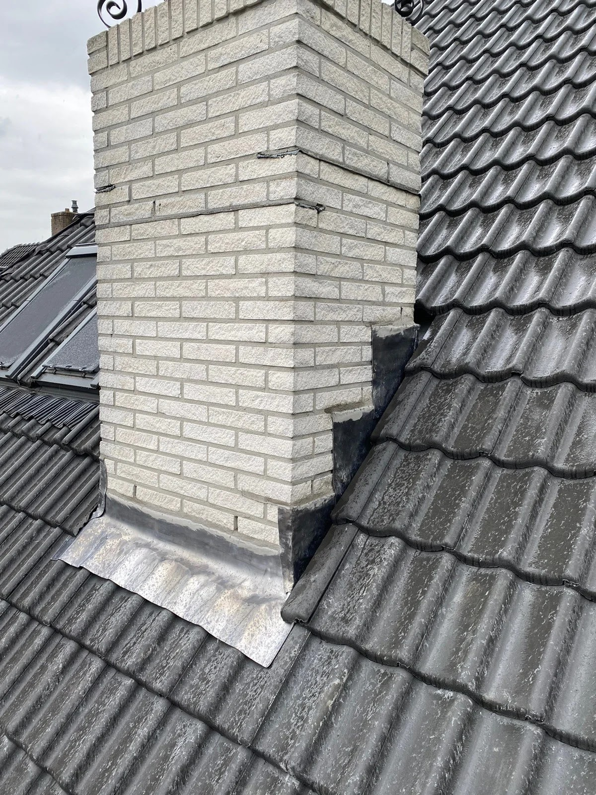

Komt er water binnen?
Een vochtplek op het plafond, een pan op de stoep of lood dat loslaat. Hoe eerder we de oorzaak vinden, hoe kleiner de schade aan balken en isolatie.
- Daklekkage en dakreparatie: eerst droog, dan de oorzaak.
- Lood- en zinkwerk: gescheurd lood vervangen en opnieuw invoegen.
- Schoorsteenrenovatie: voegwerk en lood vernieuwen.
- Nokvorsten: weer vastzetten of een droge nok leggen.